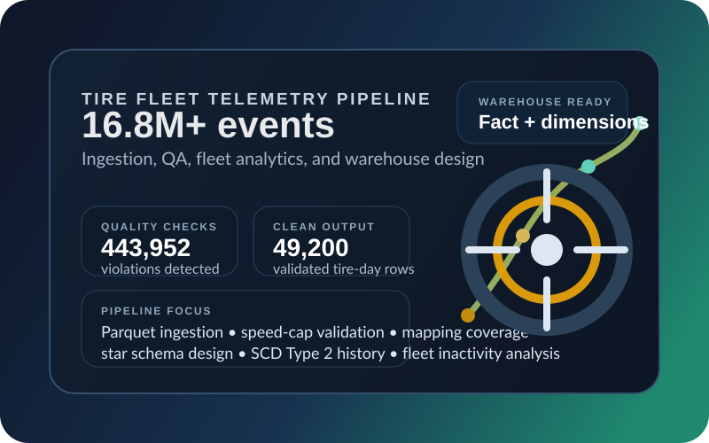

Foundational
AWS Certified Cloud Practitioner
Demonstrates core AWS knowledge across cloud concepts, security, pricing, and services that support reliable delivery decisions.
View verified badge
Portugal-based data engineer
Data Engineer | AWS Solutions Architect | Python & SQL
Building scalable data pipelines, validation frameworks, and analytics-ready models for cloud platforms and telemetry-heavy datasets.
Designing and maintaining scalable data pipelines and cloud data platforms.
Delivered across 20TB with quality checks, validation, and monitoring.
Pipeline processing after deploying Terraform-driven AWS infrastructure.
Selected work that reflects my current focus on data engineering, data quality, and analytics-ready platform design.

Data Engineering Case Study
An end-to-end telemetry pipeline covering parquet ingestion, data quality validation, fleet analytics, and dimensional warehouse design across 16.8M+ events.
Python • Pandas • Jupyter • Parquet • Data Quality • Star Schema

Gameplay Prototype
A survival dungeon crawler prototype focused on player tension, lamp-fuel management, and enemy avoidance in a top-down pixel art environment.
Game Design • Gameplay Systems • Pixel Art • Prototype Development
AWS certifications that reinforce my cloud fundamentals and architecture skills for production-minded data platforms.
Foundational
Demonstrates core AWS knowledge across cloud concepts, security, pricing, and services that support reliable delivery decisions.
View verified badgeAssociate
Validates the ability to design resilient, secure, and cost-aware AWS architectures for real-world workloads and evolving platform needs.
View verified badgeData Engineer at Critical TechWorks, building reliable data flows and analytics foundations since October 2023.
Metrics from my latest CV that capture the outcomes I aim to reproduce in every data platform project.
A mix of cloud, engineering, and analysis tooling that supports production-minded data work.
Data engineering professional with almost 3 years of experience designing and maintaining scalable data pipelines and cloud-based data platforms. I focus on turning noisy operational data into validated, analytics-ready datasets with clear lineage and trustworthy business context.
My recent work spans batch and real-time processing, large-scale datasets, process mining models, and infrastructure on AWS using Terraform. I enjoy building data products that make downstream analysis faster, clearer, and more reliable for the teams using them.